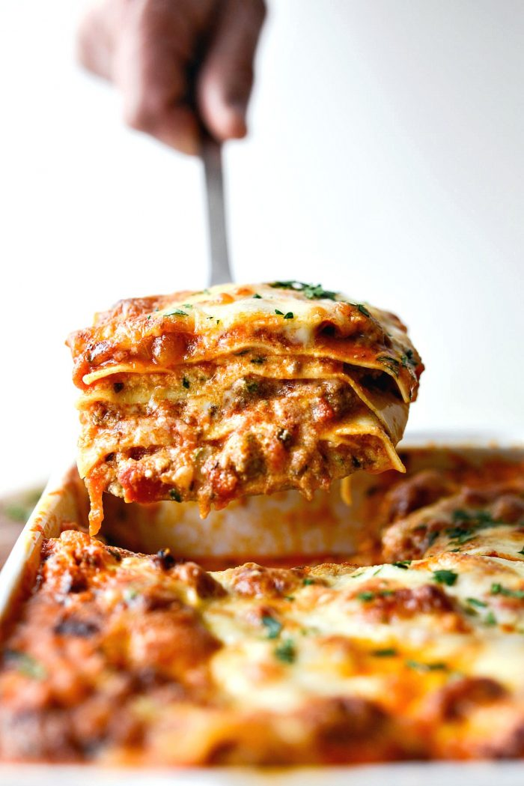

Small Batch Lasagna

This Small Batch Lasagna recipe is saucy, cheesy and easy to throw together. Oven-ready noodles are stacked between 4 layers of meat sauce, mozzarella and creamy ricotta. Will serve 6.
- Prep Time: 35 mins
- Cook Time: 35 mins
- Total Time: 1 hr 10 mins
Ingredients
- 1 teaspoon olive oil
- 1 medium yellow onion, diced
- 5 cloves garlic, minced
- kosher salt
- 1/2 pound hot italian sausage
- 1/2 pound ground beef
- 28 ounces marinara sauce
- 15 ounces ricotta cheese
- 1 large egg
- 2 tablespoons parmesan cheese, freshly grated
- 1 tablespoon parsley
- 8 no-boil, oven ready lasagna noodles
- 2 cups mozzarella cheese, freshly grated
Instructions
- Preheat your oven to 375℉ (or 190℃) and grease a 9x9x2.5-inch square baking dish.
- Add olive oil, onion and garlic with a pinch of kosher salt to a deep sided skillet. Heat on medium-low, stir and cook 5 minutes or until softened.
- Increase the heat to medium-high and add in the ground meat or sausage. Use a wooden spatula or spoon to break up the sausage. Stir often until no longer pink and the meat is browned. Drain and discard any fat in the pan.
- Once the sausage or meat is browned and the fat removed from the pan, pour in the marinara. I added 1 (28-ounce) jar to a liquid measuring cup and added enough water until it reached 4 cups.
Remove the pan from the heat and pour the marinara. There's no need to simmer.
- Meanwhile, in a medium bowl combine the ricotta, egg, 2 tablespoon parmesan cheese and parsley. Season with a pinch of kosher salt and some freshly ground black pepper. Stir to combine.
- Spread a few large spoonfuls of sauce on the bottom of the prepared baking dish.
Layer One
- Lay down 2 noodles, side by side and top with 1/3 (I just eyeball it) of the ricotta mixture and spread it evenly.
- Top with 1/4 of the sauce and sprinkle with a little less than 1/3 of the 2 cups of mozzarella (or about a generous 1/2 cup).
Layer Two
- Lay down 2 noodles (going the opposite direction), side by side and top with 1/3 of the ricotta mixture and spread it evenly.
- Top with 1/4 of the sauce and sprinkle with a little less than 1/3 of the mozzarella.
Layer Three
- Lay down 2 more noodles (going the opposite direction) side by side and top with the remaining 1/3 of ricotta mixture and spread it evenly.
- Top with 1/4 of the sauce. (no cheese)
Layer Four
- Lay down the final 2 noodles (going the opposite direction) side by side and top with the last of the sauce.
- Sprinkle with the remaining mozzarella cheese and parmesan.
- Transfer to a rimmed metal baking sheet (to catch any spill over) and bake uncovered for 30 to 40 minutes or until bubbly and the cheese is golden brown.
- Let cool 10 minutes before slicing and serving.
Back to Home